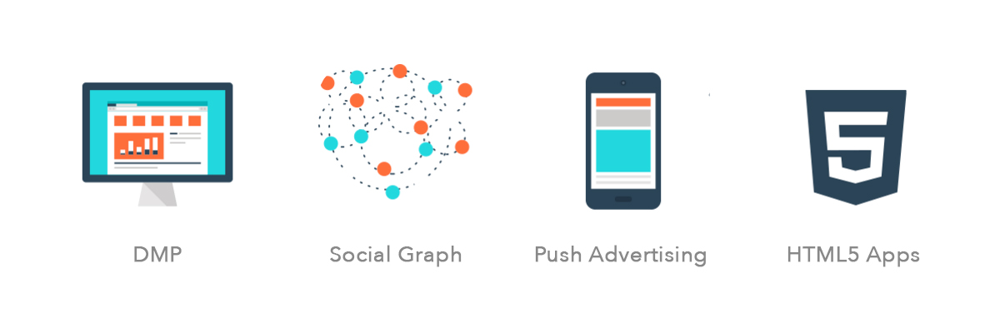
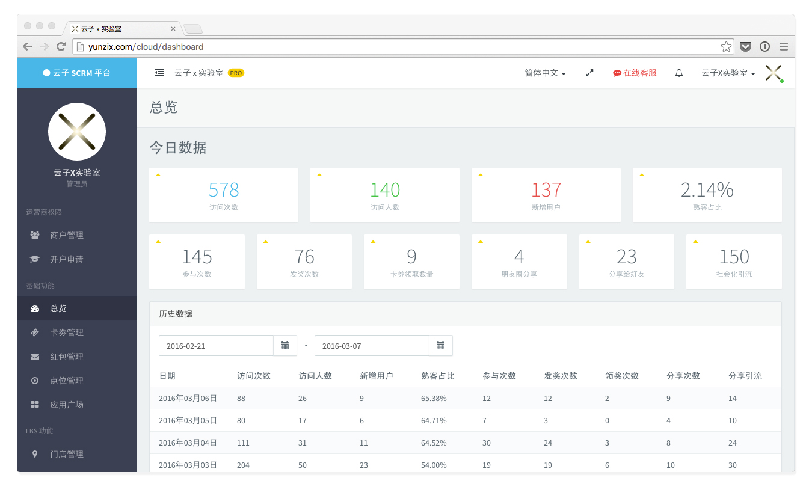
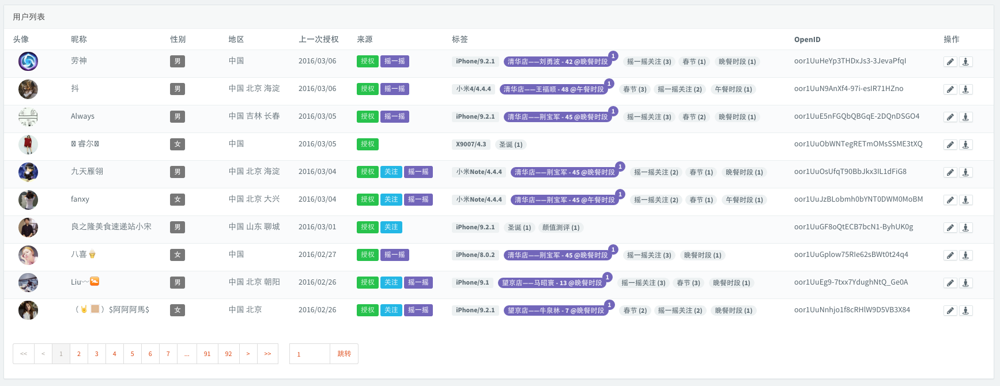
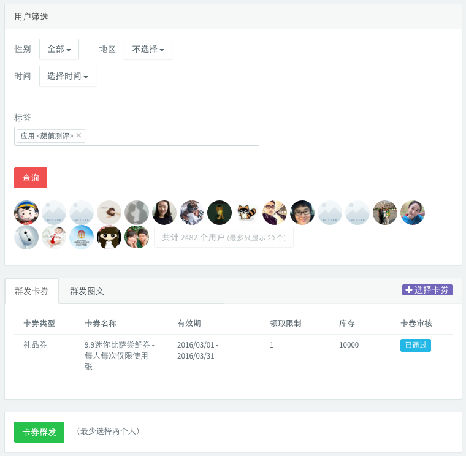

Yunzi Social Customer Relationship Platform is a marketing data service system that provides modularized HTML5 development features to help brands, retailers and enterprise users to create mobile HTML5 applications with minimum steps, and to perform offine-to-online marketing plans. Through offine intelligent sensor network and online data collection, our clients will be able to trace their customers’ real-time behavioral data and location information down to individual. Integrated with automated tag system, social graph and push advertising function, it arms the traditional industries with data support, interactive user experience and precision marketing strategy.
Project Brief
Introduction to Yunzi SCRM Platform
MY ROLE
I led the design of Yunzi SCRM across Web, Mobile HTML5, iOS and Android since the kickoff of this project in October 2015. Up until July 2016, I led efforts to evolve the service and designed over 20 mobile interactive functional modules.
Insight & Ideation
- I partnered with one product manager and our business development leader to research into our prospective clients and translate insights into design criteria that address clients' pain-points and needs.
Vision & Product Structuring
- I defined the product with project management lead and product manager. I envisioned targeted audience's demands and plotted these into product features. I created frameworks to share the vision and design principles.
Design Execution & Refinement
- I led the design of the data management platform across web and mobile, and designed multiple functional modules from zero to one. I executed product structural design, wireframes, prototypes and final visual outputs.
Coordination & Leadership
- I collaborated with both front-end and back-end developer team and actively communicated ideas in a design-technology integration context throughout the entire developing stage.
The Challenge
Problem Defining and Research Insights
High Tech Development Cost
- Chinese local retail industry, especially small to middle scale businesses, normally will not maintain in-house software research and development team. They employ outside contractors to conduct digital marketing activities, which are often costly and time-consuming.
Inaccurate Customer Profiling
- Offline customer behavioral data are relatively more difficult to collect and less effective to manage as well as analysis. Online and offline customer data are often unlinked. Under this circumstance, retailers can hardly perform accurate customer profiling and provide individualized services.
Irresponsive Marketing Strategy
- Responsive off-to-online marketing requires heavy design and development workload. And most retail business holders, who do not have these sort of work force, will adopt a rather rigid and sluggish marketing strategy.
The Solution
Social CRM Platform with Interactive Marketing Modules
Yunzi SCRM consist data management platform, customer social influence graph, push advertising and HTML5 applications, integrated with offline intelligent sensors and micro-location-based services. Setting up interactive HTML5 Apps or customizing mobile webpages with extremely low development input, retailers will be able to remotely deploy online-to-offline interactive marketing activities in no more than 10-minute time. Offline behavioral data from intelligent sensor network, online interacting data from mobile HTML5 applications, social networking information collected under customers‘ consent, plus auto-tagging system which keeps sticking attribute tags to individual when one interacts with our sensors or apps, Yunzi SCRM is capable of depict a customer with precise and individualized profiling. This power enables traditional retailers to perform agile and responsive marketing strategy.
DATA MANAGEMENT PLATFORM
The data management platform is the core of Yunzi SCRM, organizing customers data in a visualized form. On the dashboard, you may check today’s data report as well as historical data. You can launch an interactive marketing HTML5 via the application store. Deployment and management of the intelligent sensor hardware network are also provided as a main function.
SOCIAL GRAPH
Individual-level Multi-facet Customer Profile
- Customer’s data, collected from offline behaviors, online interactions and social network, will help to create a multi-facet customer profile, which helps our clients to customize their marketing strategy more specifically.
Opinion Leader & Dissemination Network
- Through analyzing customers’ engagements on their social networks, SCRM platform aids defining opinion-leaders from their customer segments, push designated information to the opinion-leaders, and hence create better dissemination efficacy with lower cost.
MOBILE HTML5 APPLICATIONS
Designed and developed according to interactive marketing scenarios, our clients will be able to setup and deploy an interactive mobile html5 application within 10 minutes. The interactive mobile applications are able to serve scenarios including online lottery, chatroom, event registration, survey, indoor location-based services. Online coding and development function is also supported.

CUSTOMER PROFILING
Based on customer’s online interactions, offline behavior and location tracking, and social network information, the platform assigns tags to each customer’s profile which establish multi-facet evaluation to every individual. It creates significant value for data analysis and precision marketing strategies.
PUSH ADVERTISING
Highly integrated with WeChat (instant messenger and social platform, around 600 million active users in Asia), Yunzi SCRM platform can push precisely customized content according to customer’s profile and segment. The platform also provides multiple filters for categorizing customers, and prompt data feedbacks for analysis.
MOBILE APP TOOL
X Lab Utility App enables our clients to monitor real-time data, review data report, publish or suspend marketing interactive events with the most convenient steps. This App is designed with hierarchical access to the data management features and marketing activity deployment. For instance, the brand manager has the authority to launch a new marketing event through the App and has access to data of all branches. The branch store manager will have access to the operations to his/her branch only.